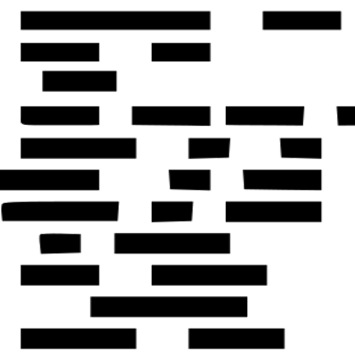

<div class="content">
    <h2>Check out our Articles</h2>
    <button class="btn btn-primary" routerLink="/createArticle" *ngIf="canCreateArticles">
        Create new article
    </button>

    <mat-progress-spinner *ngIf="loading" mode="indeterminate"></mat-progress-spinner>

    <div *ngIf="articles">
        <div *ngFor="let article of articles" class="article-container" >
            <div [routerLink]="['/article/',article.id]">
                <div class="left-article-img">
                    
                </div>
                <div class="right-article-data">
                    <div class="article-info">
                        <h3>{{article.articleName}}</h3>
                        <h3>Published on {{article.datePublished | date:'medium'}}</h3>
                        <h3 *ngIf="article.lastUpdate">Last Updated on {{article.lastUpdate | date:'medium'}}</h3>
                        <p class="article-author">Written by <span class="author-name">{{article.authorUserName}}</span> on {{article.topic}}</p>
                    </div>
                    <div class="description">
                        {{article.description}}
                    </div>
                </div>
            </div>
        </div>
    </div>

    <div class="not-found-section" *ngIf="noArticles && !loading">
        <app-not-found-page></app-not-found-page>
    </div>
</div>